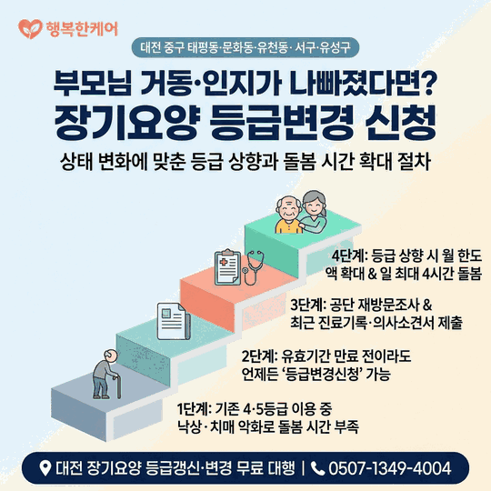

1. 언제 대전 장기요양 등급변경 신청을 하나요
장기요양 등급을 처음 판정받으셨을 때보다 어르신의 신체 거동 능력이나 인지 기능이 악화되어 현재 등급의 월 한도액과 시간만으로는 돌봄이 부족할 때 대전 장기요양 등급변경 신청을 진행하실 수 있습니다.
예를 들어 4등급이나 5등급으로 하루 3시간 방문요양을 이용하시던 중 고관절 골절 수술을 받으셨거나, 치매 배회·야간 불면 증상이 심해져 더 긴 시간의 돌봄이 필요해진 경우가 대표적입니다.
대전 유성구(전민동, 관평동, 신성동, 죽동, 봉명동, 장대동, 구암동, 상대동, 도안동, 원신흥동, 노은동, 지족동, 반석동)와 서구(둔산동, 월평동, 갈마동, 가수원동, 관저동, 도마동), 중구(태평동, 문화동, 유천동, 오류동, 대흥동) 전 지역 어르신 가정을 직접 찾아뵙는 행복한케어는 어르신의 평소 생활 습관과 건강 상태, 주보호자분의 요청 사항을 세심하게 파악하여 가장 호흡이 잘 맞는 베테랑 요양보호사 선생님을 매칭해 드리고 있습니다.

2. 등급 상향 시 달라지는 월 한도액과 시간
2026년 기준 장기요양 재가급여 월 한도액은 5등급 1,208,900원, 4등급 1,409,700원에서 3등급 1,528,200원, 2등급 2,331,200원, 1등급 2,512,900원으로 크게 늘어납니다.
특히 1등급이나 2등급으로 상향 판정을 받으시면 1일 최대 240분(4시간) 방문요양 수가는 물론 월 한도액 여유가 넓어져 방문요양과 주 1회 방문목욕을 훨씬 넉넉하게 조합하실 수 있습니다.
3. 등급변경 신청 서류와 공단 재방문조사
등급변경 신청서를 국민건강보험공단에 접수하면 신규 신청 때와 마찬가지로 공단 직원이 어르신 가정을 방문하여 52개 항목 인정조사를 다시 실시하고 의사소견서 제출을 안내합니다.
이때 최근 입원·수술 퇴원요약지나 신경과·정형외과 진료기록, 그리고 이전 조사 때와 비교해 새로 못 하게 되신 일상 동작(혼자 화장실 이동 불가, 옷 갈아입기 전적 도움 등)을 구체적으로 설명하시는 것이 중요합니다.
4. 장기요양등급 갱신 신청 기간 (만료 90~30일 전)
상태 변화에 따른 등급변경과 별개로, 모든 장기요양인정서에는 유효기간(통상 2년~4년)이 정해져 있으며 만료 후에도 계속 급여를 이용하시려면 반드시 갱신 신청을 하셔야 합니다.
갱신 신청은 현재 유효기간이 끝나기 90일 전부터 30일 전 사이에 접수하셔야 돌봄 공백 없이 기존 서비스를 그대로 이어가실 수 있습니다.
5. 갱신 절차가 간소화되는 경우와 준비물
직전 등급과 동일한 상태가 지속되는 장기 수급자 어르신 중 일정 요건에 해당하시는 경우 의사소견서 제출이 면제되는 등 갱신 절차가 간소화되기도 합니다.
공단에서 우편과 문자로 보내드리는 갱신 안내문을 확인하신 뒤 의사소견서 제출 대상 여부를 먼저 점검하시고, 행복한케어 사회복지사와 함께 갱신 서류를 준비하시면 편리합니다.
서비스 시작 이후에도 전담 사회복지사가 정기적으로 가정을 방문하여 돌봄 일정을 점검하고 불편 사항을 조율해 드리므로 맞벌이 자녀분들이나 타 지역에 거주하시는 보호자분들도 마음 놓고 일상에 집중하실 수 있습니다. 월 한도액 안에서 방문요양, 방문목욕, 복지용구를 어떻게 배분할지 고민되실 때도 어르신 댁의 상황에 맞춘 월별 이용 계획표를 알기 쉽게 안내해 드립니다.
6. 갱신 시기를 놓쳤을 때의 대처 방법
만약 바쁜 일상 중에 유효기간 만료 30일 전 기한을 넘기셨더라도 유효기간 만료일 전까지는 갱신 신청 접수가 가능하지만, 판정 결과가 만료일 이후에 나오면 그사이 며칠간 급여 공백이 발생할 수 있습니다.
행복한케어를 이용하시는 어르신 가정에는 전담 사회복지사가 유효기간 만료 90일 전 미리 연락을 드려 갱신 일정을 놓치지 않도록 꼼꼼히 챙겨 드리고 있습니다.
7. 중구 태평·문화·유천동 및 서구·유성구 방문 지원
행복한케어는 대전 중구 태평동, 문화동, 유천동, 오류동, 목동, 대흥동과 서구, 유성구 전 지역 어르신 가정으로 직접 찾아가 등급변경 및 갱신 신청 대행을 무료로 도와드립니다.
새로 판정된 등급과 월 한도액에 맞춰 어르신께 꼭 필요한 방문요양 시간과 방문목욕, 복지용구 품목까지 원스톱으로 재설계해 드립니다.
8. 무료 등급변경·갱신 상담 안내
부모님의 건강 상태가 달라져 현재 등급으로 돌봄이 벅차시거나 인정 유효기간 만료가 다가온다면 언제든 전문가와 상의해 보시기 바랍니다.
장기요양 제도 및 등급 판정 공식 문의는 국민건강보험공단(1577-1000)에서 확인하실 수 있으며, 대전 장기요양 등급변경 신청 및 방문요양 상담은 행복한케어(0507-1349-4004)로 연락해 주세요.
2026년 노인장기요양보험 등급별 월 한도액 · 방문요양·방문목욕 본인부담금 공식 기준표
보건복지부 및 국민건강보험공단 고시 기준, 장기요양 1~5등급 어르신이 대전 자택에서 재가급여(방문요양·가족요양·방문목욕)를 이용하실 때 국비 85~100%가 지원됩니다. 일반 수급자(15%), 감경 대상자(9%·6%), 기초생활수급권자(법정 0%) 기준 시간당·등급별 상세 내역은 아래와 같습니다.
| 구분 (급여 시간 / 등급) | 2026년 공단 급여수가 | 일반 (15%) | 감경 (9% / 6%) |
|---|---|---|---|
| 방문요양 1회 3시간 (180분) | 57,020원 | 8,553원 | 약 5,132원 / 3,421원 |
| 방문요양 1회 4시간 (240분) | 70,080원 | 10,512원 | 약 6,307원 / 4,204원 |
| 가정 방문목욕 1회 (2인 1조, 60분 이상) | 50,100원 | 7,515원 | 약 4,509원 / 3,006원 |
| 가족요양 60분 (월 최대 20일) / 90분 (월 최대 31일) | 요양보호사 자격 가족 직접 돌봄 | 주 1회 가정 방문목욕(2인 1조) 동시 병행 가능 | |
※ 등급별 월 재가급여 한도액(2026년 기준): 1등급 2,512,900원 · 2등급 2,331,200원 · 3등급 1,528,200원 · 4등급 1,409,700원 · 5등급 1,208,900원 (연 160만 원 복지용구 별도 지원). 대전 유성구·서구·중구·대덕구·동구 무료 방문상담: 행복한케어(0507-1349-4004)